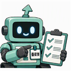
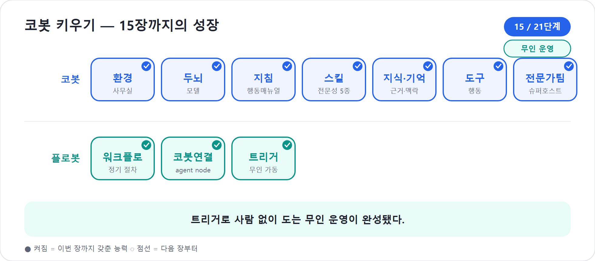

15장. 스스로 출근하는 코봇 — 트리거
지금까지 코봇과 플로봇은 일을 잘했지만, 대체로 누군가가 불러야 움직였다. 사용자가 “시작해줘”라고 말하거나, 제작자가 테스트 버튼을 눌러야 했다. 그러나 현실의 업무는 사람이 기억해 부르는 것만으로는 부족하다. 매주 월요일 아침에는 보고가 나가야 하고, 고객 메일이 오면 분류가 시작되어야 하며, 에이전트가 고위험을 발견하면 즉시 정해진 절차가 돌아야 한다.
그 시작 신호가 트리거(trigger)다. 트리거는 코봇과 플로봇의 출근 알람이다. 사람이 직접 깨우는 알람도 있고, 시스템 사건이 울리는 알람도 있고, 달력 시간이 울리는 알람도 있다. 4부의 마지막 장인 이 장에서는 Workflows 실행을 여는 세 가지 입구를 정리한다. 수동, 다른 자동 이벤트/에이전트, 일정(schedule)이다.
2026년 기준 주의
이 장의 트리거 설명은 새 에이전트 경험과 새 Workflows 공개 미리보기를 기준으로 한다. 공식 Learn 문서는 agent flows와 workflows가 수동, 다른 자동 이벤트나 에이전트, 일정에 의해 트리거될 수 있다고 설명한다. 세부 커넥터와 UI는 미리보기 기간에 바뀔 수 있다.
자동 가동 스위치
트리거는 흐름을 시작하는 사건이다. 플로봇 입장에서 보면 컨베이어벨트의 전원 스위치다. 스위치가 눌리면 Start 노드가 깨어나고, 그 뒤에 연결된 액션들이 차례로 실행된다.
트리거를 세 가지로 나누면 입문자가 설계하기 쉽다.
| 트리거 종류 | 언제 쓰나 | 예 |
|---|---|---|
| 수동(Manual) | 사람이 버튼을 눌러 시작하거나 테스트할 때 | 보고서 게시 워크플로를 PM이 직접 실행 |
| 다른 자동 이벤트/에이전트 | 외부 사건이나 에이전트 호출이 시작 신호일 때 | 새 메일 도착, SharePoint 항목 생성,
When an agent calls the flow |
| 일정(Schedule) | 정해진 시각·주기로 반복할 때 | 매주 월요일 오전 9시 주간 보고 생성·발송 |
수동은 연습장이다. 자동화 초반에는 수동 트리거로 시작해 입력 모양과 분기를 확인하는 편이 좋다. 다른 자동 이벤트/에이전트 트리거는 업무 현장의 사건과 연결된다. 일정은 사람이 잊어도 돌아야 하는 반복 업무에 붙인다.
트리거 4종(+에이전트 호출) 한눈에
| 트리거 | 언제 작동 | 쓰는 상황 예 |
|---|---|---|
| 수동(manual) | 사람이 직접 실행하거나 테스트할 때 | PM이 보고서 게시 워크플로를 직접 실행하고, 입력 계약과 분기를 확인한다 |
| 일정(schedule) | 정해진 시각·주기로 반복할 때 | 매주 월요일 오전 9시 주간 보고를 생성·발송한다 |
| 이벤트(connector) | 메일 도착, SharePoint 항목 생성처럼 외부 사건이 생길 때 | 고객지원 공유 메일함에 환불 키워드가 있는 메일이 오면
담당자에게 분류 알림을 보낸다 |
| HTTP | 외부 HTTP 요청이 들어올 때 | 다른 시스템에서 신호를 보내 워크플로를 시작한다 |
| 에이전트 호출 | 코봇이 플로봇을 부를 때 | 코봇이 고위험 리스크 에스컬레이션을 판단하면 승인 요청, Teams 알림, SharePoint 기록 흐름을 깨운다 |
팁
처음부터 일정 트리거로 열어 두지 말자. 수동으로 충분히 테스트하고, Activity에서 입력·출력이 안정된 뒤 일정으로 바꾼다. 자동화는 빠르게 실패하면 피해도 빠르게 커진다.
수동 트리거 — 안전한 리허설
수동 트리거는 사람이 직접 실행하는 방식이다. 워크플로를 처음 만들 때
가장 좋은 출발점이다. 13장에서 만든 금요일 보고 라인도 처음에는 수동으로
시작했다. projectName, reportBody,
reportTitle 같은 입력을 손으로 넣고 전체 흐름을 돌려
본다.
공식 디자이너 문서에 따르면 수동 트리거의 전체 테스트를 실행하면 입력 대화상자가 열리고, 텍스트·숫자·이메일·날짜·불리언·파일·JSON 같은 입력을 넣을 수 있다. 이것은 단순한 편의가 아니다. 플로봇의 입력 계약을 확인하는 과정이다. 보고서 본문이 비어 있으면 막히는지, 날짜 형식이 잘못되면 오류를 내는지, 승인자가 없으면 어떤 분기로 가는지 검증한다.
수동 트리거는 다음 상황에 어울린다.
- 아직 업무 규칙을 다듬는 중이다.
- 승인자·채널·폴더 같은 설정이 자주 바뀐다.
- 실행 전 사람이 매번 내용을 확인해야 한다.
- 테스트와 교육용으로 워크플로를 보여 주고 싶다.
수동은 자동화의 반대가 아니다. 안전한 리허설이다. 무대에 올리기 전에 조명과 동선을 확인하는 시간이다.
코봇 한마디
"수동 트리거는 저와 플로봇의 리허설 시간이에요. 자동으로 출근시키기 전에 입력과 분기가 안전한지 먼저 손으로 확인해 주세요!"
다른 자동 이벤트/에이전트 — 사건이 플로봇을 깨운다
두 번째 트리거는 사건 기반이다. 메일이 도착하거나, SharePoint 목록에 항목이 생기거나, 외부 HTTP 요청이 들어오거나, 다른 시스템에서 신호가 올 때 워크플로가 시작된다. 공식 문서는 이를 “다른 자동 이벤트 또는 에이전트”에 의해 트리거되는 흐름으로 설명한다.
여기에는 14장에서 본 중요한 경우가 포함된다. 바로 에이전트 호출 트리거(When an agent calls the flow) — 코봇이 플로봇을 부르는 신호다. 이 트리거를 가진 워크플로는 에이전트의 tool로 추가될 수 있다. 코봇이 “고위험 리스크를 에스컬레이션해야 한다”고 판단하면, 이 트리거를 통해 플로봇을 깨운다.
코봇 판단
→ severity = high
→ workflow tool 호출
→ When an agent calls the flow 트리거
→ 플로봇: 승인 요청, Teams 알림, SharePoint 기록
→ Respond to agent반대로 시스템 사건이 먼저 올 수도 있다.
고객 메일 도착
→ Workflow trigger
→ Classify: 청구/기술/영업 분류
→ Extract: 주문번호·금액·마감일 추출
→ Agent node 또는 M365 Copilot node
→ Human review 또는 자동 응답이 설계에서는 사람이 “메일 왔으니 처리해줘”라고 말하지 않아도 된다. 사건 자체가 플로봇을 깨운다. 다만 사건 기반 트리거는 범위를 좁혀야 한다. “메일이 오면 모두 처리”는 위험하다. 특정 공유 메일함, 특정 제목 조건, 첨부 여부, 중요도, 보낸 사람 같은 필터를 두어 시작 신호를 정확히 잡는다.
함정
트리거 조건이 넓으면 자동화가 소음을 만든다. 모든 메일, 모든 파일, 모든 목록 변경에 반응하는 워크플로는 금세 불필요한 실행과 비용을 만든다. 시작 신호는 좁고 선명하게 잡는다.

플로봇 한마디"저를 깨우는 신호는 좁을수록 좋아요. 특정 메일함, 특정 제목, 특정 보낸 사람으로 조건을 조이면 헛걸음 없이 필요한 일에만 출근합니다!"
일정 트리거 — 달력이 플로봇을 깨운다
세 번째 트리거는 일정이다. 매일, 매주, 매월처럼 정해진 시각에 흐름을 시작한다. 이 장의 대표 예는 매주 월요일 오전 9시 주간 보고 발송이다. 한국 회사 맥락에서는 월요일 아침 주간 업무 보고, 금요일 오후 회고 알림, 매월 말 비용 정리, 분기별 라이선스 점검 같은 일이 여기에 맞다.
일정 트리거는 가장 자동화답지만, 동시에 가장 쉽게 방치된다. 사람이 직접 실행하지 않으니 실패를 늦게 알아차릴 수 있다. 그래서 일정 기반 워크플로에는 세 가지 장치를 붙이는 것이 좋다.
- 실행 요약 알림: 성공·실패를 담당자에게 알려 준다.
- Human review: 대외 발송·비용 처리 전에는 사람 승인을 둔다.
- Activity 확인 루틴: 6부의 Monitor에서 실행 추세와 실패 지점을 정기적으로 본다.
일정 트리거는 “잊지 않게 해주는 장치”이지 “책임을 없애는 장치”가 아니다. 책임자는 여전히 필요하다. 다만 책임자가 달력 알람과 반복 클릭에 시간을 쓰지 않아도 되게 해 준다.
"달력이 플로봇을 깨워도 책임자가 사라지는 건 아니에요. 저는 반복 알람을 줄여 드리고, 사수님은 중요한 승인과 감시에 집중하게 되는 거죠!"
러닝 예제 — 월요일 오전 9시 주간 보고
이제 13장과 14장의 조각을 묶어 자동 운영 시나리오를 만들자. 예제 이름은 월요일 오전 9시 주간 보고다. 금요일 보고 라인을 조금 바꾸어, 한 주의 시작에 프로젝트 상태를 요약해 팀에 보내는 흐름으로 만든다.
Schedule trigger: 매주 월요일 09:00
→ SharePoint/Planner/Teams에서 지난주 변경사항 수집
→ Agent node: 코봇에게 상태보고서 초안 요청
→ Extract/Classify: 고위험 항목·마감 임박 항목 구조화
→ Human review: PM 승인
→ If approved
→ Teams 프로젝트 채널 게시
→ Outlook으로 이해관계자 발송
→ SharePoint 보고 폴더 저장
Else
→ 코봇에게 수정 요청 또는 PM에게 반려 알림
→ Activity/Analytics에 실행 기록이 흐름에서 판단과 절차의 분업이 보인다. 지난주 변경사항을 모으고 정해진 채널에 게시하는 일은 플로봇의 절차다. 상태보고서를 읽기 좋게 요약하고 위험도를 설명하는 일은 코봇의 판단이다. 승인 이후 Teams와 Outlook, SharePoint에 남기는 일은 다시 플로봇의 절차다.
실무에서는 처음부터 모든 데이터를 자동으로 모으려 하지 않는 편이 좋다. 첫 버전은 입력을 단순하게 잡는다.
입력 1: 지난주 완료 작업 목록
입력 2: 이번 주 예정 작업 목록
입력 3: 이슈·리스크 목록
입력 4: PM 승인자수동으로 몇 차례 돌려 보고, 보고서 형식과 승인 분기가 안정되면 SharePoint나 Planner 같은 데이터 원천을 붙인다. 마지막에 일정 트리거를 단다. 순서는 “수동 → 사건 → 일정”으로 성숙시킨다고 기억하자.
트리거와 비용 — 실행은 공짜가 아니다
트리거를 붙이면 플로봇이 스스로 움직인다. 편리하지만 실행 횟수가
늘어난다. 공식 flows-overview 문서는 agent flow와
workflow가 실행하는 각 액션이 Copilot Studio 용량을
소비한다고 안내한다. 또한 환경의 선불 용량을 모두 쓰면 새
실행이 차단될 수 있고, 테스트 실행에는 예외가 있을 수 있다고
설명한다.
그래서 트리거 설계는 비용 설계이기도 하다. 같은 일을 처리해도 트리거 조건이 넓으면 실행이 많아지고, 실행이 많으면 액션 소비가 늘어난다. 예를 들어 “모든 메일이 올 때마다 실행”하는 흐름과 “고객지원 공유 메일함에서 제목에 환불 또는 장애가 포함될 때 실행”하는 흐름은 비용과 소음이 다르다.
| 설계 선택 | 비용·운영 영향 |
|---|---|
| 트리거 조건이 넓음 | 실행 횟수 증가, 불필요한 액션 소비, 실패 알림 증가 |
| 트리거 조건이 좁음 | 필요한 사건에 집중, 실행량 예측 쉬움 |
| 일정이 너무 잦음 | 변화가 없어도 반복 실행, 용량 낭비 가능 |
| 먼저 필터링 후 처리 | 뒤쪽 AI·커넥터 액션을 줄일 수 있음 |
| Human review 남발 | 안전하지만 대기와 운영 부담 증가 |
이 내용은 6부의 거버넌스·비용으로 이어진다. 15장에서 할 일은 원칙을 세우는 것이다. 자동으로 시작되는 모든 흐름에는 실행 횟수와 액션 수가 따라온다. 편리한 알람은 계기판과 예산표를 함께 가져야 한다.
현장에서
“매 5분마다 확인”은 처음에는 든든해 보이지만, 실제로는 하루 288번의 실행 기회를 만든다. 업무상 1시간마다 충분한지, 사건 기반 트리거로 바꿀 수 있는지 먼저 묻자. 자동화의 성숙도는 더 자주 도는 것이 아니라, 필요한 순간에만 정확히 도는 것이다.
무인 운영에도 사람의 자리 남기기
트리거가 붙으면 업무는 호출형에서 자동형으로 바뀐다. 이때 가장 위험한 착각은 “사람이 빠질수록 좋은 자동화”라고 믿는 것이다. 좋은 자동화는 사람이 없어지는 것이 아니라, 사람이 있어야 할 자리를 정확히 남긴다.
사람의 자리는 세 곳이다.
- 시작 전 설계: 무엇을 자동화할지, 어떤 조건에서 시작할지, 실패하면 누구에게 갈지 정한다.
- 실행 중 검토: Human review로 승인·반려·수정 요청을 한다.
- 실행 후 감시: Activity, analytics, Monitor에서 실행 기록과 실패 패턴을 본다.
무인 운영은 무통제가 아니다. 오히려 자동으로 도는 흐름일수록 더 명확한 통제판이 필요하다. 트리거는 일을 깨우지만, 책임까지 대신하지는 않는다.
트리거 설계 체크리스트
새 Workflow에 트리거를 붙이기 전, 다음 질문을 확인하자.
| 질문 | 확인할 내용 |
|---|---|
| 왜 자동으로 시작해야 하는가? | 사람이 눌러도 되는 일인지, 정말 자동 시작이 필요한지 |
| 시작 신호는 충분히 좁은가? | 메일함, 폴더, 제목, 중요도, 작성자, 상태값 등 필터 |
| 중복 실행을 어떻게 막는가? | 같은 항목 재처리 방지, 상태값 업데이트, 고유 ID 사용 |
| 실패하면 누가 알게 되는가? | 담당자 알림, 실패 기록, 재시도 기준 |
| 사람 검토가 필요한가? | 비용·고객·개인정보·대외 발송 여부 |
| 실행량을 예측했는가? | 하루·주·월 예상 실행 수와 액션 수 |
| 테스트는 어떻게 할 것인가? | 수동 테스트, 노드 테스트, 이전 실행값 재현 |
이 체크리스트는 5부와 6부의 다리다. 5부에서는 Preview와 Evaluate로 의도대로 도는지 검증하고, 6부에서는 게시·모니터·거버넌스·비용 관점에서 운영한다. 15장은 그 사이에서 “스스로 시작하는 힘”을 설계한다.
플로봇 한마디
"무인으로 돌리기 전에 실행량부터 헤아려요. 하루·주·월에 몇 번 도는지, 사람 검토가 필요한지, 테스트는 어떻게 할지를 적어 두면 자동화가 사고를 안 칩니다!"
한 가지 짚어 둘 것이 있다. 이 책은 ‘스스로 출근하는 힘’을 주로 플로봇에게 맡겨 설명했다. 트리거가 사건·시각을 신호로 절차를 깨우는 그림이다. 그러나 자동으로 깨어나는 능력이 플로봇만의 전유물인 것은 아니다. 같은 트리거의 발상은 코봇 자신에게도 점점 열리고 있다. 사람이 말을 걸 때만 일하던 코봇이, 정해진 신호에 스스로 깨어나 판단까지 이어 가는 방향이다. 그렇게 되면 ‘스스로 출근하는 코봇’이라는 이 장의 제목은 비유를 넘어 더 곧이곧대로 이루어진다. 다만 깨우는 주체가 코봇이든 플로봇이든, 앞의 체크리스트—왜 자동인가, 신호는 좁은가, 사람 검토는 어디인가—는 똑같이, 오히려 더 엄격히 적용된다. 스스로 도는 힘이 클수록 울타리도 함께 깊어져야 한다.
작은 자동화부터 시작한다
트리거가 강력하다고 해서 처음부터 회사 전체 프로세스를 자동화할 필요는 없다. 오히려 첫 자동화는 작을수록 좋다.
좋은 첫 사례는 다음과 같다.
- 매주 월요일 오전 9시, 프로젝트 채널에 “이번 주 해야 할 일” 초안을 게시한다.
- 고객지원 공유 메일함에
환불키워드가 있는 메일이 오면 담당자에게 분류 알림을 보낸다. - SharePoint 리스크 목록에
고위험항목이 생기면 PM에게 승인 요청을 보낸다. - 매월 25일, 다음 달 워크숍 예산 점검 알림을 예산 담당자에게 보낸다.
나쁜 첫 사례는 “모든 고객 메일을 읽고, 알아서 답하고, 필요하면 환불하고, 담당자에게 보고까지 하라” 같은 거대한 흐름이다. 자동화는 한 번에 큰 동료를 만드는 일이 아니라, 작은 신뢰를 쌓아 가는 일이다. 작은 트리거 하나가 안정되면 다음 트리거를 붙인다.
"저를 키우듯 자동화도 작게 시작해 주세요. 작은 트리거 하나가 안정적으로 돌 때마다, 플로봇과 제가 맡을 수 있는 일이 자연스럽게 커집니다!"
핵심 정리
| # | 요점 |
|---|---|
| 1 | 트리거는 Workflows를 시작하는 자동 가동 스위치다. 4부에서는 수동, 다른 자동 이벤트/에이전트, 일정으로 나누어 이해한다. |
| 2 | 수동 트리거는 안전한 리허설이다. 입력 계약과 분기를 확인한 뒤 자동 트리거로 넓힌다. |
| 3 | 다른 자동 이벤트/에이전트 트리거는 메일·목록·외부
요청·When an agent calls the flow 같은 사건이 플로봇을
깨우는 방식이다. |
| 4 | 일정 트리거는 매일·매주·매월 반복되는 업무에 쓴다. 잊지 않게 해 주지만 책임을 없애지는 않는다. |
| 5 | 트리거 조건은 좁고 선명해야 한다. 넓은 조건은 불필요한 실행, 비용, 실패 알림을 만든다. |
| 6 | 워크플로와 에이전트 플로는 실행 액션마다 Copilot Studio 용량을 소비하므로, 트리거 설계는 비용 설계와 연결된다. |
| 7 | 무인 운영은 무통제가 아니다. Human review, Activity, analytics, 6부의 Monitor와 거버넌스가 함께 가야 한다. |
자주 묻는 질문(FAQ)
| 질문 | 답변 |
|---|---|
| 처음부터 일정 트리거로 만들면 안 되나? | 가능하지만 권하지 않는다. 먼저 수동으로 입력과 분기를 검증하고, 노드 테스트와 전체 테스트를 거친 뒤 일정으로 바꾸는 편이 안전하다. |
| Forms 제출은 어떤 트리거인가? | 이 장의 큰 분류로는 다른 자동 이벤트에 속한다. 양식 제출, 메일 도착, 목록 변경처럼 외부 사건이 흐름을 깨우는 방식이다. |
| 에이전트가 워크플로를 부르는 것도 트리거인가? | 그렇다. When an agent calls the flow 트리거를 가진
워크플로는 에이전트의 tool로 추가되어 코봇이 호출할 수 있다. |
| 트리거가 여러 번 겹쳐 실행되면? | 시작 조건을 좁히고, 처리 상태값이나 고유 ID로 중복 처리를 막는다. 필요하면 실패·중복 분기를 별도로 둔다. |
| 자동화가 실패했는지 어떻게 알 수 있나? | Activity 패널과 analytics, 6부의 Monitor에서 실행 상태와 실패 지점을 본다. 중요한 흐름은 실패 알림도 별도로 둔다. |
| 트리거가 비용에 영향을 주나? | 트리거 자체보다 실행된 워크플로 액션 수가 용량 소비로 이어진다. 그러나 트리거 조건이 넓으면 실행과 액션 수가 늘어나므로 비용에 직접 영향을 준다. |
다음 부에서는
4부에서 코봇과 플로봇은 드디어 자동화 팀이 되었다. 13장에서 플로봇의 설비를 세웠고, 14장에서 코봇과 양방향으로 엮었고, 15장에서 트리거로 스스로 출근하게 했다. 하지만 만들었다고 곧 믿을 수 있는 것은 아니다. 5부에서는 Preview, 머릿속 보기, Evaluate로 코봇과 플로봇이 정말 의도대로 일하는지 확인한다. 자동화의 다음 단계는 더 많이 돌리는 것이 아니라, 제대로 도는지 증명하는 일이다.
실습 — 코봇 키우기 15단계: 스스로 도는 무인 운영

〔이어받기〕 14장의 코봇⇄플로봇 결합. 그러나 아직 사람이 시작 버튼을 눌러야 한다. 마지막으로 스스로 깨어나게 한다.
14-a. 일정 트리거를 건다. “매주 금요일 오후 4시” 일정 트리거를 워크플로에 건다.
14-b. 무인 흐름을 잇는다. 트리거가 플로봇을 깨우고 → 코봇에게 상태보고서 생성을 요청 → 결재선 발송 → 팀 채널 게시까지 자동으로 돈다. 사람은 승인 버튼만 누른다.
14-c. 안전장치를 본다. 중복 실행 방지·실행 로그·용량 소비(실행 액션당)를 확인한다.
〔성장〕 플로봇은 스스로 깨어나 절차를 집행하고, 코봇은 사람 없이 도는 운영의 지휘자가 됐다. 프로젝트가 무인으로 도는 순간. 〔검증 포인트〕 트리거(또는 테스트 실행) 시 사람이 말 걸지 않아도 보고서 생성→발송→게시가 자동으로 돌면 통과.